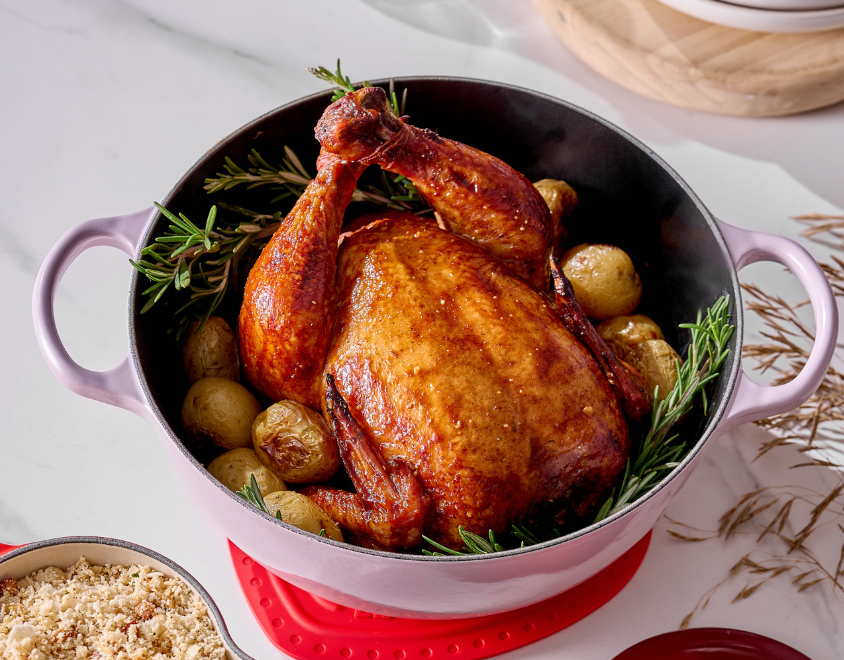
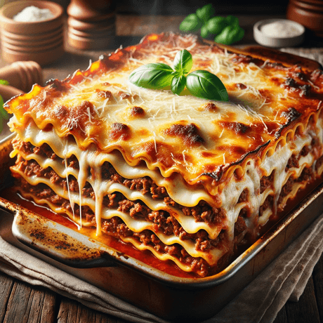

Pratos Principais

Frango Assado
Frango assado suculento com temperos especiais.
Tempo de preparo: 1h 30min
Porções: 4
Ingredientes:
- 1 frango inteiro
- 3 dentes de alho amassados
- Suco de 1 limão
- 2 colheres de sopa de manteiga
- Sal e pimenta a gosto
- Ervas finas (alecrim, tomilho) a gosto
- Batatas para acompanhar (opcional)
Modo de Preparo:
- Preaqueça o forno a 200°C.
- Tempere o frango com o alho, suco de limão, sal, pimenta e ervas finas.
- Esfregue a manteiga sobre a pele do frango.
- Coloque o frango em uma assadeira e leve ao forno.
- Asse por aproximadamente 1h 30min, regando com o próprio suco de vez em quando.
- Se desejar, acrescente batatas cortadas em pedaços na assadeira para assar junto com o frango.
- Retire do forno quando a pele estiver dourada e crocante.
- Deixe descansar por 10 minutos antes de servir.

Lasanha
Lasanha tradicional com camadas de carne e queijo.
Tempo de preparo: 1h 15min
Porções: 6
Ingredientes:
- 500g de massa para lasanha
- 500g de carne moída
- 1 cebola picada
- 2 dentes de alho picados
- 400g de molho de tomate
- 200g de queijo mussarela fatiado
- 100g de queijo parmesão ralado
- 2 colheres de sopa de azeite de oliva
- Sal e pimenta a gosto
- Manjericão fresco para decorar (opcional)
Modo de Preparo:
- Preaqueça o forno a 180°C.
- Em uma panela, aqueça o azeite e refogue a cebola e o alho.
- Adicione a carne moída e cozinhe até dourar.
- Acrescente o molho de tomate, sal e pimenta. Cozinhe por mais 10 minutos.
- Cozinhe a massa de lasanha conforme as instruções da embalagem.
- Em uma assadeira, monte as camadas: massa, carne, queijo mussarela, e repita até terminar.
- Finalize com o queijo parmesão ralado.
- Leve ao forno por 30 minutos ou até o queijo derreter e dourar.
- Decore com manjericão fresco antes de servir.

Risoto de Cogumelos
Risoto cremoso com uma mistura de cogumelos selvagens.
Tempo de preparo: 40 minutos
Porções: 4
Ingredientes:
- 300g de arroz arbóreo
- 200g de cogumelos variados
- 1 cebola picada
- 2 dentes de alho picados
- 1/2 xícara de vinho branco seco
- 4 xícaras de caldo de legumes quente
- 50g de manteiga
- 50g de queijo parmesão ralado
- Sal e pimenta a gosto
- Azeite de oliva
Modo de Preparo:
- Em uma panela, aqueça o azeite e refogue a cebola e o alho até ficarem transparentes.
- Adicione os cogumelos e refogue por alguns minutos.
- Acrescente o arroz e mexa bem para envolver os grãos com o azeite.
- Despeje o vinho branco e mexa até evaporar.
- Comece a adicionar o caldo de legumes, uma concha por vez, mexendo constantemente.
- Continue adicionando o caldo e mexendo até o arroz ficar al dente (cerca de 18-20 minutos).
- Retire do fogo e adicione a manteiga e o queijo parmesão. Misture bem.
- Tempere com sal e pimenta a gosto.
- Sirva imediatamente, decorando com cogumelos frescos e salsinha, se desejar.